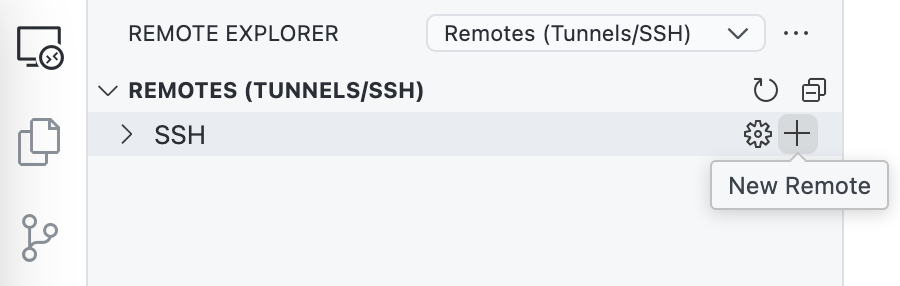
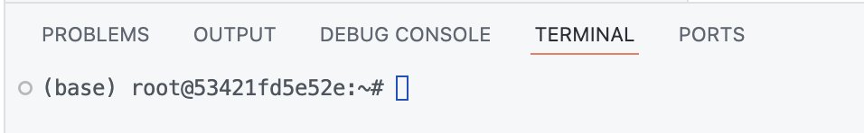
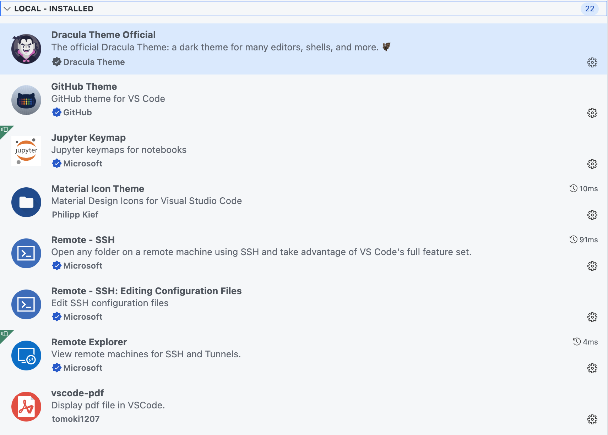
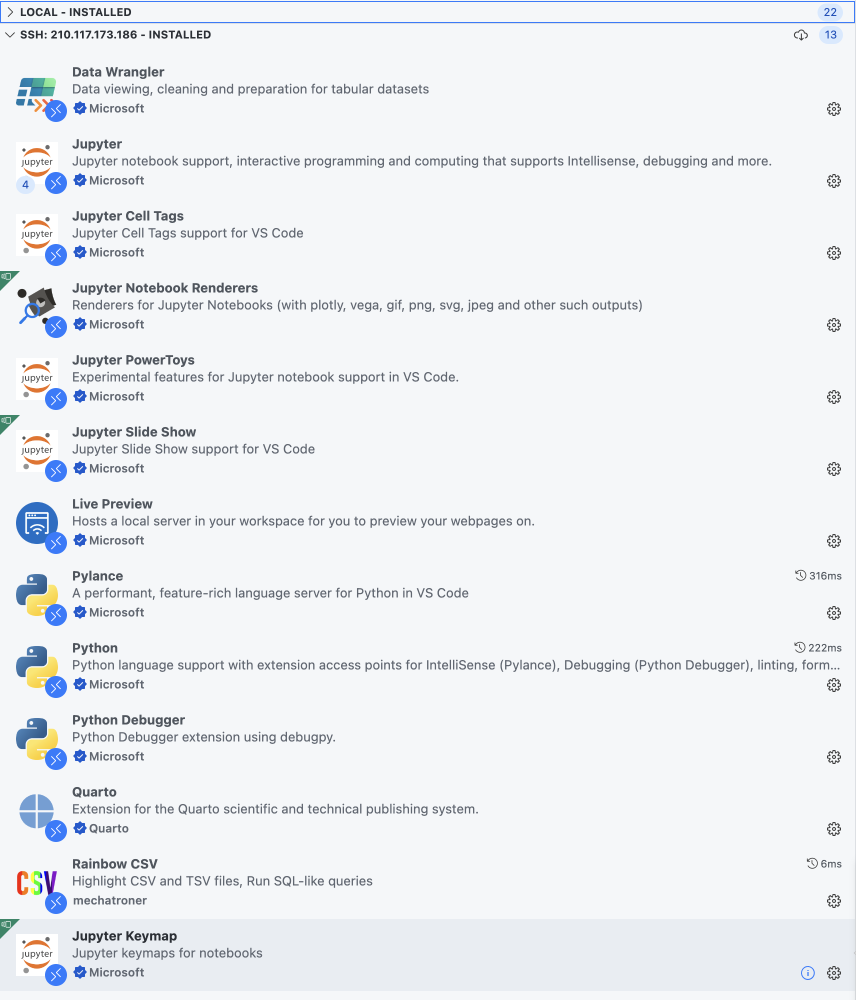
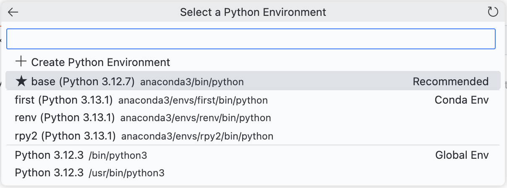
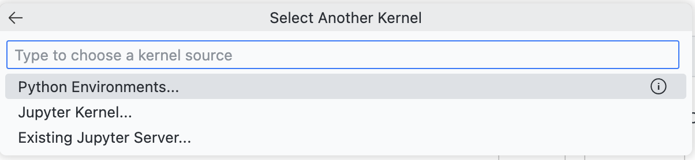
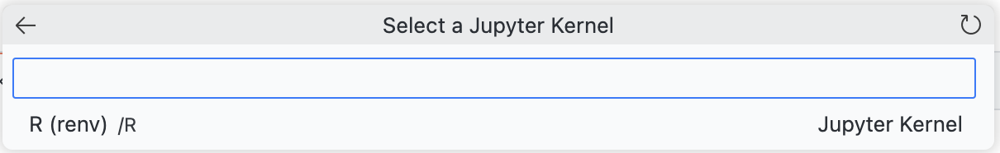
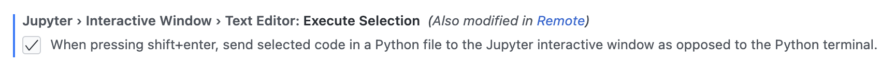
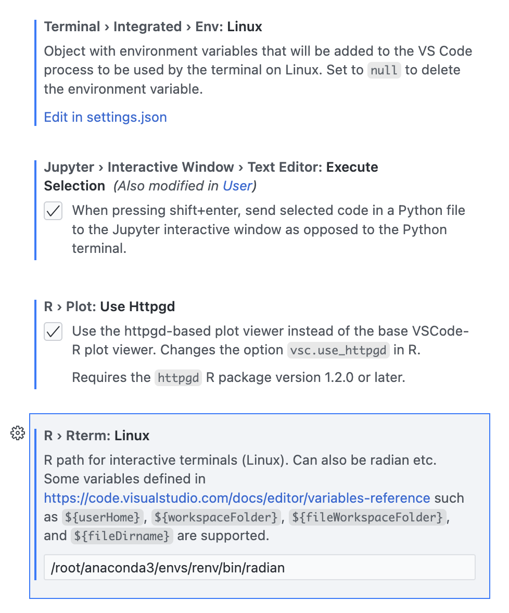

Day3: vscode 설치 –
강의영상 요청하기
1 vscode 설치
- vscode 다운로드 및 설치
2 ssh 설정
- EXTENSTIONS 에서 아래를 설치 (Remote - SSH 만 설치하면 나머지는 자동설치됨)
Remote - SSHRemote - SSH: Editing Configuration FilesRemote Explorer
- REMOTE EXPLORER 열기

ssh접속시 사용하는 코드 작성
- 터미널이 아래와 같이 바뀌면 성공

3 EXTENSIONS
- 저의 LOCAL EXTENSIONS

- 저의 REMOTE EXTENSIONS

4 .ipynb에서 커널선택
4.1 python 커널
- local(현재는 186는 컴퓨터를 지칭)의 python 커널을 선택하기 위해서 아래에서 Python Environments... 선택

- 설치된 모든 스펙을 표시해줌

- 각 경로의 python 확인해보기
ls py* # py로 시작하는 파일/폴더명을 출력 - 질문: 몇개의 컴퓨터가 있다고 보여지는가?
/root,(base),(first),(renv),(rpy2)가 있다고 생각됨
- 질문: 각각의 python은 어떤 컴퓨터에 설치되어있는가? (그리고 이러한 python을 언제 설치했는가?)
/bin/python3은 어떤 컴퓨터에 설치되어있는가?usr/bin/python3은 어떤 컴퓨터에 설치되어있는가?anaconda3/bin/python은 어떤 컴퓨터에 설치되어있는가?anaconda3/envs/first/bin/python은 어떤 컴퓨터에 설치되어있는가?anaconda3/envs/renv/bin/python은 어떤 컴퓨터에 설치되어있는가?anaconda3/envs/rpy2/bin/python은 어떤 컴퓨터에 설치되어있는가?
4.2 R 커널
- local(현재는 186는 컴퓨터를 지칭)의 R 커널을 선택하기 위해서 아래에서 Jupyter Kernel... 선택

- 아래를 선택 (선택의 여지가 없음)

- 질문: 왜 rpy2에 설치된 R은 등록되지 않는가?
- 저기에는 Jupyter Kernel에 등록된 list만 보입니다.
- 그런데 (rpy2)의 R은 Jupyter Kernel에 등록하지 않았어요.
- (renv)의 R은 등록했습니다. 콘다에서 r-essentials 를 설치할때 자동등록..
5 환경만드는 팁
- (base) 에 설치하는 방법은 피한다.
- 가능하면 /root 자체에 뭘 설치하는 경우는 피한다.
apt-get- 충돌관리가 어려워보이는 패키지는 conda install 을 사용한다. 별 충돌이 없을거라 생각하는 패키지는 pip install 을 사용한다.
- 가상환경을 설계하는 것은 논리적으로 접근해서 해결 할 수 있는 문제가 아니다. 시행착오를 통해 답을 찾아야 한다. (구글도 실패한다니까요?)
6 환경만들기: torch
- 아래가 동작하는 환경을 구성해 볼 것
Python 3.12.2 | packaged by conda-forge | (main, Feb 16 2024, 20:50:58) [GCC 12.3.0] on linux
Type "help", "copyright", "credits" or "license" for more information.
>>> import torch
>>> torch.cuda.is_available()
True
>>> - 아래의 코드를 주피터노트북에서 실행해 볼 것.
import torch
torch.cuda.is_available()7 환경만들기: scikit-learn
- 여기로 이동하여 노트북을 다운로드하고, 이것이 동작하는 환경을 설계하라.
8 환경만들기: HuggingFace
ref2: https://huggingface.co/docs/transformers/en/installation
- 아래의 명령어를 이용하여 노트북을 다운로드하고, 이것이 동작하는 환경을 설계하라.
!wget https://raw.githubusercontent.com/guebin/MP2024/refs/heads/main/quiz/Quiz-7.ipynb9 환경만들기: AutoGluon
ref: https://auto.gluon.ai/stable/tutorials/tabular/tabular-quick-start.html
- 여기의 코드가 동작하는 환경을 설계하라.
10 .py를 이용한 코딩
- 아래를 설정

- test.py 파일 생성
import numpy as np
import pandas as pd
import matplotlib.pyplot as plt
x=np.array([1,2,3,4])
y=np.array([1,2,4,3])
pd.DataFrame({'x':x, 'y':y})
plt.plot(x,y)
print(x+y)- shift + enter 실행해보기
- Interactive-1을 저장해보기
- Run Python File 로 실행해보기
- 커널을 바꾸어서 실습해보기
vscode 기본설정들
11 bash 커널
# 예제1
echo hello #
# 예제2
a=askdf
a
$a
echo $a#
a = asdf라고 입력하면 오류가 발생한다.
# 예제3
a=(상민 다빈)
echo $a
echo ${a}
echo ${a[0]}
echo ${a[1]}
echo ${a[@]}#
# 예제4
cmd_list=(ls "ls -a")
${cmd_list}
${cmd_list[0]}
${cmd_list[1]}#
terminal도 커널이었음!!
12 export
- 걱정: 근데 그러면 내 리눅스에는 평생 a, cmd_list 라는 변수가 있는거야??
- 아니요
- 평생존재하는 변수도 있다. (환경변수)
env- bash커널에서 아래를 이용하여 ipython을 실행하자.
ipython- 일반변수는 ipython이 상속받지 못하지만 환경변수는 ipython이 상속받는다.
a=asdf
ipython !echo $a
!echo $PATH모두 대문자로 선언된 변수는 subprocess를 뚫고 갈 수 있다. 기계학습코드들에서 보면 하이퍼파라메터를 설정할때 모두 대문자로 설정하는 경우가 종종 있는데, 리눅스의 환경변수에서 유래되지 않았을까?
- 그런데 export 를 하면 상속받을 수 있다.
a=asdf
b=1234
export a
ipython!echo $a
!echo $b
!echo $PATH
ipython을 subprocess라고 한다.
subprocess의 이해, 환경변수의 이해
13 check_ports.sh
- /root (=~) 에 아래와 같은 소스코드를 가진 check_ports.sh를 만들자.
/root/check_ports.sh
#!/bin/bash
# Bash 스크립트 시작을 알리는 선언문
# 기준 학번 설정
student_id="13052"
# 숫자 목록을 저장할 배열 초기화
modified_numbers=()
# 만의 자리를 바꾼 숫자 생성
for i in {1..4}; do
# 현재 반복 중인 숫자 `i`가 student_id의 만의 자리와 같지 않을 때 실행
if [[ "${student_id:0:1}" != "$i" ]]; then
# 만의 자리를 `i`로 대체하고 나머지 숫자는 그대로 둔 새로운 숫자를 배열에 추가
modified_numbers+=("${i}${student_id:1}")
fi
done
# 십의 자리를 바꾼 숫자 생성
for i in {0..9}; do
# 현재 반복 중인 숫자 `i`가 student_id의 십의 자리와 같지 않을 때 실행
if [[ "${student_id:4:1}" != "$i" ]]; then
# 십의 자리를 `i`로 대체하고 나머지 숫자는 그대로 둔 새로운 숫자를 배열에 추가
modified_numbers+=("${student_id:0:4}${i}")
fi
done
# 테이블 헤더 출력
echo -e "Port\tPID\tCommand"
# 배열의 각 포트 번호에 대해 처리
for port in "${modified_numbers[@]}"; do
# lsof 명령을 사용하여 해당 포트 번호의 PID와 COMMAND를 추출
result=$(lsof -i:"$port" 2>/dev/null | awk 'NR==2 {print $2, $1}' | head -n 1)
# 결과가 비어 있으면 프로세스가 없음을 의미
if [[ -z "$result" ]]; then
pid="N/A" # PID를 N/A로 설정
command="N/A" # COMMAND를 N/A로 설정
else
# 결과에서 PID와 COMMAND를 각각 추출
pid=$(echo "$result" | awk '{print $1}')
command=$(echo "$result" | awk '{print $2}')
fi
# 포트 번호, PID, COMMAND를 테이블 형식으로 출력
echo -e "$port\t$pid\t$command"
done14 주피터랩 편하게
- (아무 conda 환경에서나) 아래를 실행한다.
jupyter notebook --generate-config- 아래를 수정한다.
c.ServerApp.allow_root = True
c.ServerApp.ip = '0.0.0.0'이것을 하면
jupyter lab --allow-root --ip="0.0.0.0" 대신
jupyter lab을 하여도 같은 효과이다.
- 이를 이용하여 비어있는 포트에 몇개의 Jupyter를 띄우자.
주피터랩을 좀 편하게 열자
15 문자열 결합
- 아래를 실행하고 관찰하자.
a=123
echo $a
echo ${a}45616 PATH의 비밀
- 의문1: 왜 git, python 은 아무데서나 실행되는데 bash check_ports.sh는 아무데서나 실행불가능한거지?
- 의문2: 왜 (base)에서 python을 실행하면 찰떡같이 /root/anaconda3/bin/python 이 실행되는거지?
- 아래를 관찰
echo $PATH | tr ":" "\n"- 도전!: 아무데서나 bash check_ports.sh를 실행되게 하려면?
PATH=$PATH:~
export PATH- 위의 코드를 다른 새로운 bash 에서도 자동적용되게 하려면? .bashrc파일을 열고 아래를 추가한다.
PATH=$PATH:~
export PATH근데 저는 이걸 굳이 설정하진 않아요
PATH의 이해
17 Rstudio처럼 쓰기
- R을 vscode에서 쓰고 싶다면? (굳이?..)
이거 제가 써보니까 진짜 좋긴하거든요.. 그런데 셋팅하는게 까다로워요, 그래서 굳이 셋팅해줄 필요가 있나 싶긴한데요 연습삼아 해봅시다
- 설치과정
R extension for Visual Studio Code설치radian설치httpgd설치- 경로설정 – (까다로움 \(\star\))
- 4를 잘 해결하는게 중요합니다.
핵심설정
{
"jupyter.interactiveWindow.textEditor.executeSelection": true,
"r.rterm.linux": "/root/anaconda3/envs/renv/bin/radian",
"terminal.integrated.env.linux": {
"R_HOME": "/root/anaconda3/envs/renv/lib/R"
},
"r.plot.useHttpgd": true
}